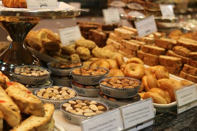
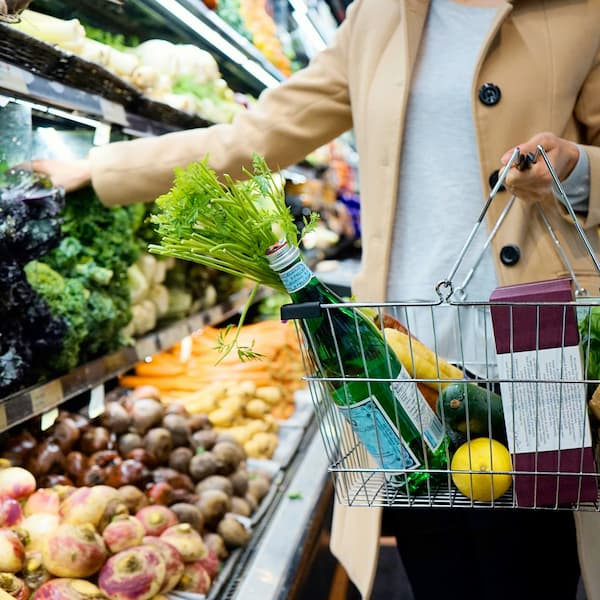
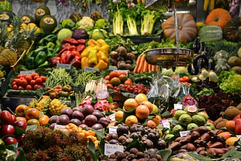
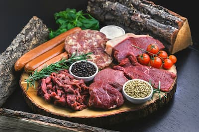

Vlastní pekárna
Několikrát denně pro vás pečeme křupavé rohlíky, chleba i sladké koláče.
Prohlédněte si naši aktuální nabídku plnou slev, objevte regionální produkty od místních farmářů nebo se stavte pro křupavé pečivo z naší vlastní pekárny.

Zakládáme si na stoprocentní čerstvosti a lokálních dodavatelích.

Několikrát denně pro vás pečeme křupavé rohlíky, chleba i sladké koláče.

Každé ráno navážíme čerstvé produkty, prioritně od českých farmářů.

Široký výběr čerstvého masa s garantovaným původem a tradičních uzenin.